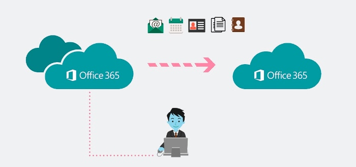

Discover The Different Types Of Office 365 Migration To Find The Right Fit For Your Business
If your business is considering migrating to Office 365, there are a few things you need to know. Office 365 is a cloud-based subscription service that offers access to Microsoft Office apps, exchange email, and other productivity services. While Office 365 can provide many benefits for businesses, it's important to understand the potential risks and challenges associated with migrating to Office 365 before making the switch. In this blog post, we'll explore some of the key considerations for migrating to Office 365, so you can make an informed decision for your business.
There are four Office 365 migration types for you to consider.

1. Staged Migration
A staged Office 365 transfer to Exchange Online movies everything in batches. It moves all of your resource mailboxes and existing users from Exchange 2003 or 2007 to Exchange Online.
A great option for medium-sized companies with over 2,000 mailboxes that are currently using on-premises Microsoft Exchange 2003 or 2007. It is not, unfortunately, available.
Migration occurs over a predefined period of time, using the directory synchronization tool to replicate your accounts from the on-premises Active Directory database. At the end of the procedure, the mail boxes will then be hosted on Office 365.
Office 365 users will continue to be able to send messages to users who have not migrated to the new service during the migration. They won't be able to access calendars and delegates that they should not have.
2. Cutover Migration
A cutover migration occurs when an Exchange server is swapped out by an Office 365 platform. All your information is transferred to an Office 365 platform one moment, including mailboxes, contacts, and distribution groups. All users on the new platform will have Office 365 accounts for them immediately.
This approach of migrating email data from Exchange 2003, 2007, 2010, and 2013 to Office 365 is advantageous if you currently use Exchange 2003, 2007, 2010, or 2013 and have fewer than 2,000 mailboxes. In fact, Microsoft recommends the cutover method for small businesses with less than 150 users to the length of time it takes to migrate so many accounts.
3. Hybrid Migration
Office 365 hybrid migration assists you to efficiently integrate Office 365 with your on-premise Exchange servers and your existing directory services. As a result, you can synchronize and control user accounts for both environments.
A hybrid migration lets you move mailboxes among Office 365 and Exchange Online. You can even input which mailboxes you want to keep on your premises and which to be migrated to Office 365. In addition, you can synchronize passwords to your team and introduce single sign on to make it easier to log in to both environments.
If you go for a hybrid migration, you need 2,000 mailboxes. It's also crucial to have Exchange 2010 or later. If you don't, you will need to install at least one on-premises Exchange 2013 or Exchange 2010 Service Pack 3 (SP3) server to enable hybrid deployment connectivity.
4. IMAP Migration
While the other three Office 365 migration types are all based on Exchange, an IMAP migration allows you to move users from Gmail or any other email system that supports IMAP migration.
Office 365 will receive information from your source mailboxes and move it over, allowing you to correspond via email. However, an IMAP migration dosn' t move anything other than email. Calendar items, tasks, and contacts will still be stored in your source inbox and will need to be migrated individually by the user.
You will have to create a mailbox for each prior user before initiating an IMAP migration, another migration solution organized for you. IMAP migrations are limited to a maximum of 50,000 total mailboxes and 5,000,000 items. And following the migration, any new email sent to the original mailbox will be migrated.
In the end, Microsoft's migration to Office 365 has been a successful transition. As an IT professional, Microsoft has equipped me with the tools and practices which I need to support my users. Office 365 has helped me reach their business goals, and I couldn't be more grateful for the opportunity.